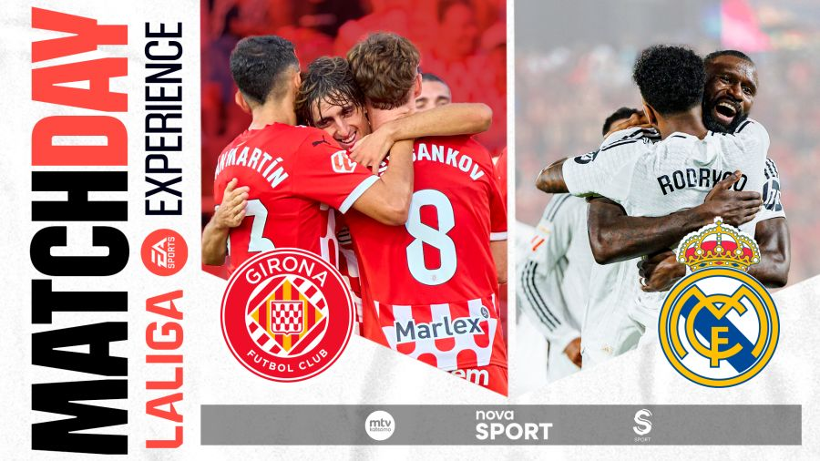
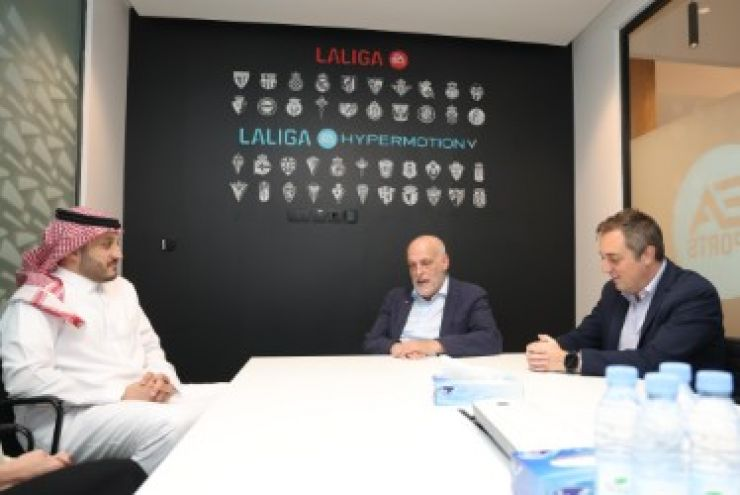

El RC Celta se hace fuerte en Balaídos
Victoria muy trabajada del conjunto vigués que dominó gran parte del encuentro. Los goles de Hugo Álvarez y Iago Aspas sentenciaron la victoria ante un RCD Mallorca que generó peligro pero no pudo derribar el muro de Guaita.
Noticias destacadas

Girona FC: Un Destino Único para la Nueva LALIGA EXPERIENCE.
La encantadora ciudad de Girona y su destacado club, el Girona FC, serán los anfitriones de la nueva edición de la LALIGA EXPERIENCE.

LALIGA inaugura oficina en Riad para impulsar su crecimiento en la región
En un movimiento significativo para reforzar su presencia en Oriente Medio, LALIGA ha anunciado la apertura de un espacio de trabajo dentro de la sede de la Saudi Pro-League (SPL) en Riad.